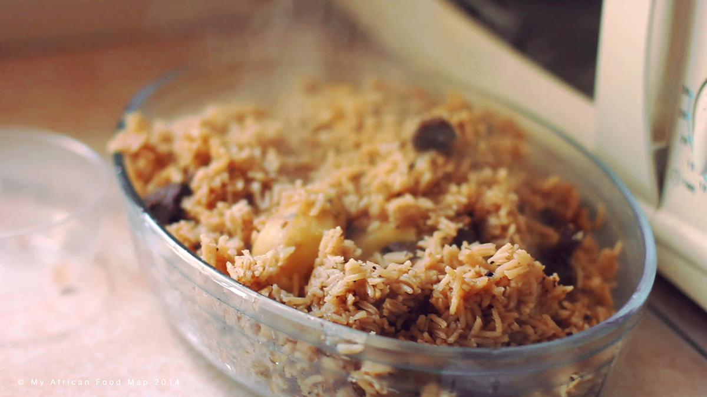

Home
Pilau-Ke Recipe

Description
Kenyan Pilau is a flavorful one-pot dish featuring long-grain rice, often with meat (beef, chicken, or mutton) and potatoes, cooked in a rich, fragrant broth seasoned with spices like turmeric, cardamom, and cloves. It's a popular dish in Kenya and other East African countries, known for its aromatic aroma and satisfying taste.
Ingriedents
- 2 onions
- 4 cloves of garlic
- 4 teaspoons of cumin seed
- 2 teaspoons of cardamon
- 1/4 teaspoon of cloves
- 1/4 teaspoon of black pepper
- 2 teaspoons of garam masala
- 2 beef stock cubes
- 3 tablespoons of cooking oil
- salt to taste
- 3 medium-sized potatoes (optional)
- 500g beef
- 750g rice
Steps
- Chop onions and set aside. Peel the garlic and put it into a mortar. Add some salt and then pound into a pulp. Cut the beef into small cubes. Peel potatoes.
- n a non-stick pot, add the oil and when this is warm, add the onions and cubed beef. After briefly frying the beef, add a bit of water and attend to the other preparations.
- Heat the cumin seeds and cardamon in a pan before putting them into the grinder. When the spices are ground, separate the husks where necessary. Mix the finely ground cumin, cardamon, cloves, garam masala and black pepper together before adding it to the frying beef. Sprinkle in your stock. Stir and add enough water for the amount of rice. Add the potatoes. Stir so that it is all mixed well, before covering. Cook on medium heat for ± 20 minutes. Check once or twice and turn your wooden spoon through the rice once. Stirring more will make the rice mushy.
- Once the rice is cooked, the meal is ready to serve.